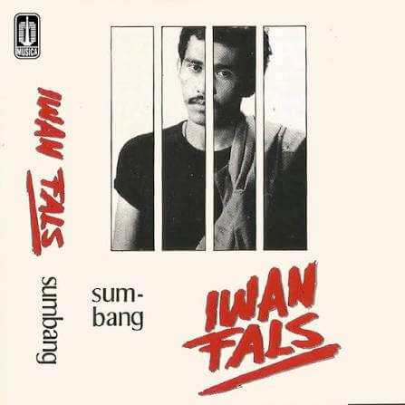
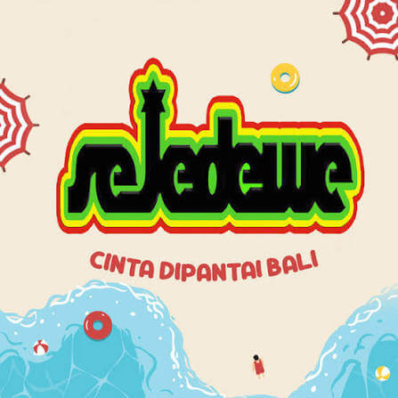
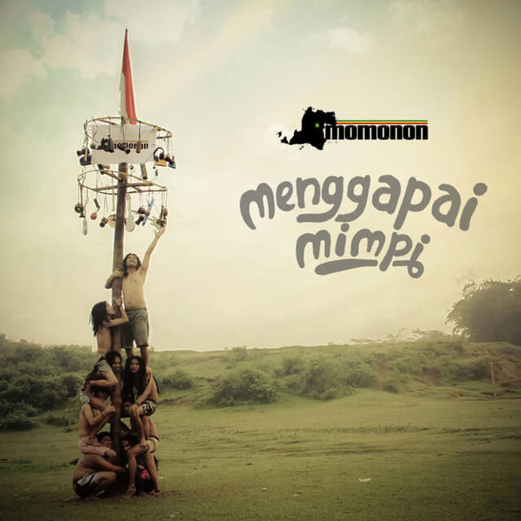

Lagu ini mengingatkan ku pada kamu ketika kita berada di kelas 7.
Lagu ini aku gambarkan sebagai cinta kita yang akan selalu abadi.

Entah mengapa lagu ini sering membuatku ingat kepadamu, mungkin karena bait lagu nya.
Kalo lagu ini mengingatkan ku ketika aku sedang berada di dekatmu, entah itu di chat, video call, atau sedang berada di samping mu.
Seperti bait di lagu nya "ada yang tertanam, tinggal di halaman hatii". Entah mengapa di bait itu aku selalu teringat kepadamu, mungkin karena kamu tidak pernah pergi dari hati aku.

Lagu ini mengingatkan ku kpda mu dengan canda dan tawa.